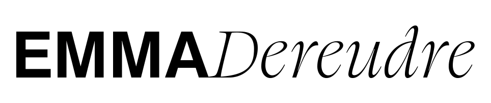
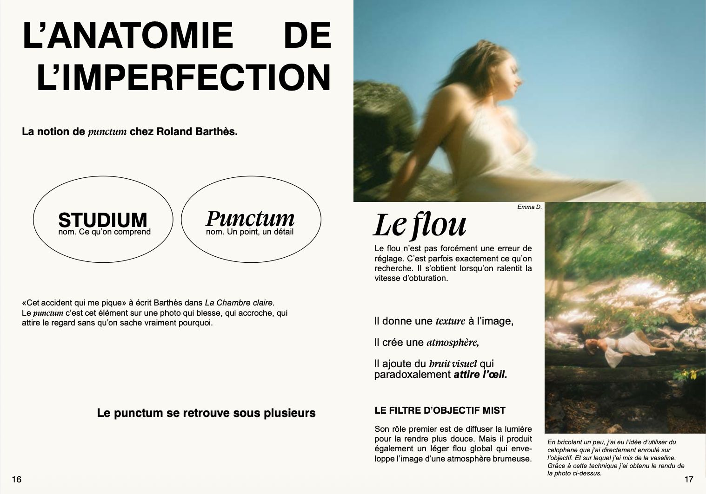
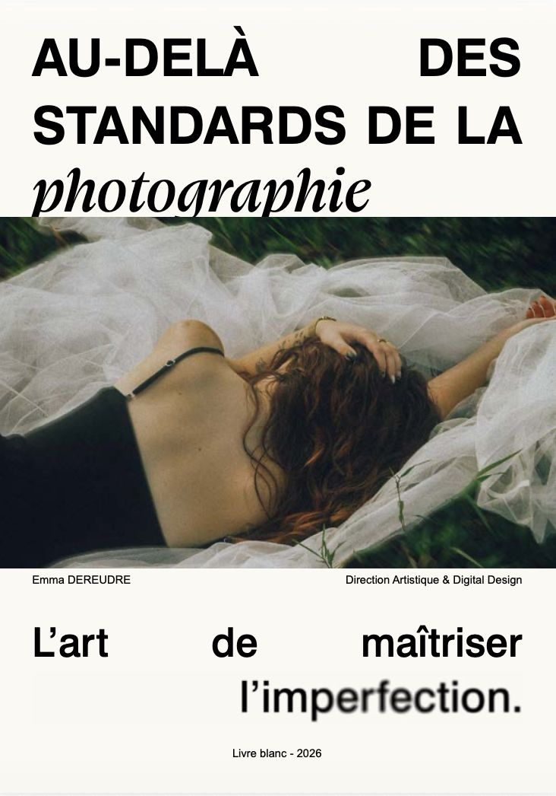

Télécharger gratuitement ce livre blanc
Dans ce livre blanc, vous trouverez :
_Une retrospective de la photographie et ses courants historiques (Argentique, Lomography, pictorialisme…),
_Une réflexion sur pourquoi l'imperfection capte l'attention et génère plus d'émotions qu'une image parfaite,
_Les outils et les techniques pour rendre vos photos plus singulières et plus émotionnelles,
_Des photographes qui ont fait le choix de se démarquer sur un marché saturé d'images parfaites.
Votre livre blanc est arrivé 📩
Vous allez recevoir un email avec le lien de téléchargement dans quelques instants. Pensez à vérifier vos spams si vous ne le voyez pas.
Ou télécharger directement ici